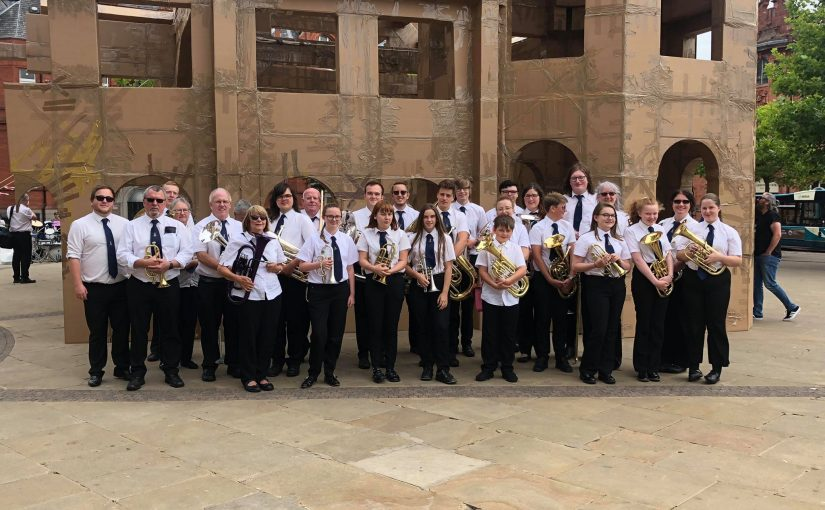

About

Who are we?
Valley Brass Band is situated in the historic former Richard Evans School building on West End Road, Haydock, St. Helens. We are a 2nd section band and perform regionally and nationally in competitions, in addition to performing for events and special occasions within our local community. We aim to encourage musical interest and develop talent in all age groups and abilities; providing professional and patient tuition to both beginners and experienced players alike. Furthermore, our designated band room and community centre provides a space for our groups to assemble weekly in a friendly and enjoyable environment.
Our centre includes a games room complete with pool and table tennis tables, a social area for tea and coffee, and an outdoor playground with a multi-use sports cage and outdoor games.
The Main Band
This is the band that attends all the major competitions every year. We also take bookings as well as schedule regular concerts throughout the year. Please see our events calendar to find what we’re up to next, and if you’re interested in joining the band, please see our vacancies for more information.
Rehearsals
Saturday: 10am - 12pm
Tuesday: 7pm - 9pm
Learners Group
It is never too early to start. We have an enthusiastic group of young learners ranging from primary school to high school, and are always welcoming new players to give it a go. Starting from the very basics of playing a single note, gradually improving through tuition to performing as a group in our community concerts, our learner group provides an exciting opportunity for any child to learn a new skill and socialise with likeminded children.
Rehearsals
Saturday: 12:15pm - 1:30pm
The Training Band
It’s never too late to start, either! Whether it’s your first time picking up an instrument, or the first time in a long time, our training band will introduce you to the basics, and encourage you to progress at your own pace; performing as a group in rehearsals and community concerts. The training band is run by professional musicians and volunteers to make learning an instrument a fun and enjoyable experience.
Rehearsals
Saturday: 12:15pm - 1:30pm
Monday: 7:30pm - 8:30pm
Tuition
We provide tuition to all age groups and abilities. Our professional tutors will help to get you started and develop in learning a brass instrument (percussion tuition is also available).
Bookings
If you are interested in having Valley Brass play at your event, please don’t hesitate to contact us! Valley Brass has over 25 years of experience playing for our local community and meeting new communities within the region. We are available for concerts, fetes, marches/walking days, memorials, ceremonies, etc. If you would like us to play at your event, please contact Dave Chadwick (Musical Director).
.png)